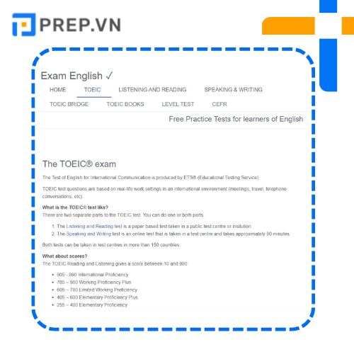
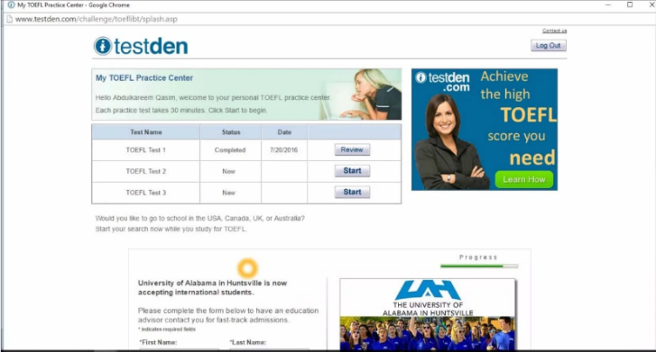
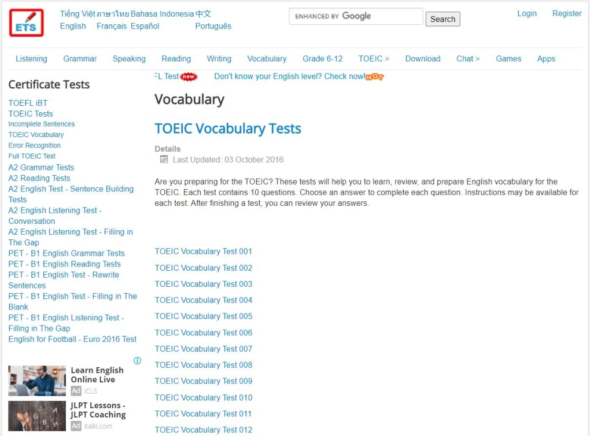
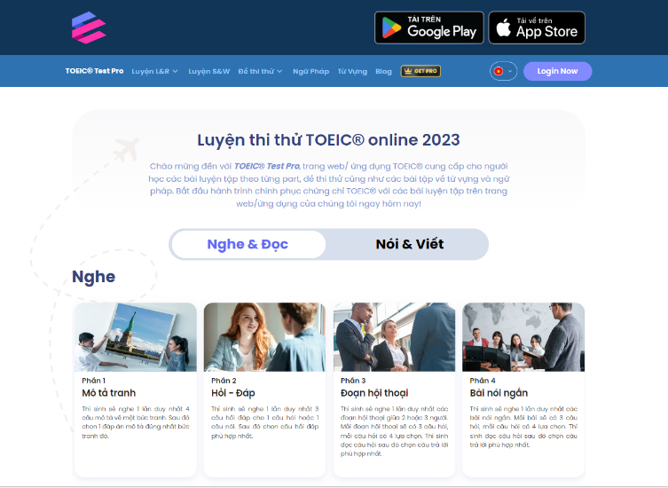

- Lợi ích của việc thi thử TOEIC online
- Tiết kiệm thời gian di chuyển
Thay vì việc di chuyển đến các trung tâm tiếng anh (hay những
những nơi tổ chức thi thử) để kiểm tra trình độ TOEIC của mình,
thì giờ đây bạn hoàn toàn có thể ngồi nhà và làm điều đó thông
qua đề thi thử TOEIC Online. Chỉ cần một chiếc máy tính có kết
nối mạng, bạn có thể kiểm tra được trình độ tiếng Anh của mình
ngay lập tức mà không tốn quá nhiều thời gian để di chuyển ra
các điểm thi thử. Bạn có thể sử dụng quỹ thời gian tiết kiếm này
cho các công việc có ích khác như là học tập, trau dồi kỹ
năng,.. một cách hiệu quả nhất.
- Làm quen cấu trúc của đề thi
Giống như mục đích chung của các đợt thi thử được tổ chức, việc
làm quen với cấu trúc đề thi TOEIC là một yếu tố quan trọng hàng
đầu. Cấu trúc bài thi thật ra sao, với các lời khuyên làm bài
như thế nào sẽ được bạn trải nghiệm một cách chân thật nhất
trong các bài thi thử TOEIC Online. Ngoài ra, khi làm các đề thi
thử TOEIC, bạn sẽ không chịu quá nhiều áp lực giống như tại các
điểm thi truyền thống hay như thi thật, nhờ đó giúp bạn bình
tĩnh và nâng cao tâm lý hơn khi bước vào làm bài kiểm tra..
- Tiết kiệm chi phí
Thông thường, mỗi lần thi thử tại các điểm thi thì sẽ có lệ phí
là trung bình từ khoảng 300.000-500.000 VNĐ. Vì thế nếu như bạn
muốn thi thử nhiều lần theo kiểu truyền thống thì sẽ rất tốn
kém. Tuy nhiên khi sử dụng các đề thi thử TOEIC online thì bạn
có thể tiết kiệm rất nhiều chi phí, thậm chí còn được miễn phí.
Có thể nói, thi thử TOEIC online là một giải pháp vô cùng hữu
hiệu 3 trong 1, giúp các bạn dễ dàng ôn tập và tiến gần hơn đến
ước mơ chinh phục ngoại ngữ của mình.
- Các website thi thử TOEIC online uy tín
-
Exam English

Các website thi thử TOEIC online uy tín
Exam English là website tự học tiếng Anh của nước ngoài, cung
cấp đa dạng bài test để người học ôn luyện, chuẩn bị cho các kỳ
thi lấy các loại chứng chỉ Cambridge, IELTS, TOEIC, TOEFL... Đặc
biệt website còn hỗ trợ ứng dụng dành cho điện thoại, mang lại
sự tiện lợi, linh hoạt trong quá trình học tập.
Tại mục TOEIC, website cung cấp những thông tin tổng quan và cần
thiết để người học nắm được mục đích bài thi, các trình độ tiếng
Anh tương ứng với từng mức điểm. Exam English cũng hướng dẫn chi
tiết cách thức làm bài áp dụng cho từng dạng bài. Đây là nội
dung hữu ích cho những người mới bắt đầu. Trong phần kiểm tra,
mỗi bài test không được thiết kế theo cấu trúc đề thi mà phân
chia thành các bài nhỏ ở từng kỹ năng (Listening, Reading,
Speaking, Writing). Cách phân chia này hữu ích cho người học
muốn chú trọng trau dồi cho từng kỹ năng cụ thể.
-
TestDEN

Các website thi thử TOEIC online uy tín
Website luyện thi TOEIC trực tuyến này phù hợp với các học viên
muốn học tiếng Anh lại từ đầu. Tài liệu luyện thi tại đây được
biên soạn theo tiêu chuẩn nghiêm ngặt và cập nhật kiến thức
thường xuyên, sát với kỳ thi thực tế. Ngoài ra, TestDEN còn cung
cấp các khóa học tiếng Anh hữu ích và chuyên nghiệp. Ngày nay
TestDEN được sử dụng bởi nhiều trường ngoại ngữ, công ty và sinh
viên tại hơn 60 quốc gia.
Nội dung đề thi và thời gian y hệt đề thi thật. Sau khi làm bài
thi thử thì TestDẸN sẽ chấm bài cho các bạn một cách khá chính
xác. Trang web này còn cung cấp cho người đọc một số tips để làm
tốt bài thi.
-
English Test Store

Các website thi thử TOEIC online uy tín
Đây là trang hỗ trợ luyện thi TOEIC chất lượng, giúp người học
nâng cao kiến thức từ vựng, ngữ âm, ngữ pháp và rèn luyện kỹ
năng nghe, nói, đọc, viết hiệu quả thông qua các bài test. Đối
với người học có ý định thi TOEIC 4 kỹ năng thì đây là một lựa
chọn tốt để trải nghiệm làm đề thi Speaking và Writing. Ngoài ra
bạn còn có thể tải xuống các bài kiểm tra miễn phí để sử dụng
ngoại tuyến.
Điểm cộng nữa của English Test Store là mang đến những trò chơi
giải trí liên quan tới tiếng Anh để người học ôn luyện một cách
thư giãn, tăng thêm hứng thú trong quá trình học tập.
-
EnglishClub
 Các website thi thử TOEIC online uy tín
Các website thi thử TOEIC online uy tín
Website này dành cho các bạn mới bắt đầu học hoặc đang tìm hiểu
về TOEIC. Nó giúp bạn bổ sung và sắp xếp lại hệ thống kiến thức
của bạn từ cơ bản đến nâng cao. Bên cạnh đó, bạn còn được vận
dụng kiến thức đã học được luyện tập với các đề thi TOEIC mà
website đã biên soạn để giúp bạn cải thiện và nâng cao khả năng
tiếng Anh của bản thân.
Không chỉ với những người học hoặc đang tìm hiểu về TOEIC mà
ngay cả các thầy cô giáo cũng có thể sử dụng website này để sử
dụng cho việc giảng dạy online hoặc trau dồi kiến thức của bản
thân.
Ngoài các kiến thức cơ bản về TOEIC Englishclub còn giúp bạn
trau dồi thêm ngữ pháp, chúng được phân chia theo nhiều cấp độ
với từng chủ đề khác nhau như: Bản tin, chương trình phát thanh,
dạng test, dạng truyện ngắn, dạng bài tập,….
-
TOEIC-testpro

Các website thi thử TOEIC online uy tín
TOEIC-testpro là một trong các trang web học TOEIC miễn phí,
thực hiện các bài thi luyện nghe và đọc TOEIC trực tuyến. Mỗi
bài test có 200 câu hỏi theo format, nội dung, và độ khó tương
đương với đề TOEIC thật. Ngoài ra, trang web còn có phần mini
test TOEIC cho bạn luyện tập trong thời gian ngắn nhưng vẫn đủ
nội dung.
Đồng thời, ngay sau khi hoàn thành bài kiểm tra, bạn sẽ được
nhận điểm của mình là bao nhiêu. Điều này sẽ giúp bạn biết kỹ
năng của mình nằm ở đâu, bạn cần cải thiện điều gì và sau đó lập
kế hoạch học tập và nỗ lực để đạt được điểm TOEIC mong muốn. Đặc
biệt hơn các trang web học TOEIC miễn phí khác, TOEIC-testpro có
các bài luyện tập từng phần TOEIC từ Part 1 đến Part 7 giúp các
bạn ôn luyện chi tiết và cải thiện những phần còn yếu.
- Một số đề thi thử TOEIC có đáp án
- Bộ ETS TOEIC
Đã ôn thi TOEIC thì không một ai có thể bỏ qua bộ sách ETS. Đây
là bộ đề do YBM độc quyền xuất bản cùng với ETS (viết tắt của
Educational Testing Service) – đơn vị tổ chức khảo thí uy tín,
ra đề thi và cấp chứng chỉ TOEIC quốc tế. Nhằm giúp học viên
tiếp cận và làm quen với đề thi TOEIC thật, bộ sách ETS được
biên soạn cực kì chi tiết, các đề thi thử TOEIC đều bám sát theo
cấu trúc đề thi thật. Dưới đây là bộ sách TOEIC mới nhất được
tổng hợp những bộ đề theo format mới, giúp các bạn làm quen hơn
với format mới này. Sau đây là link tải trọn bộ ETS TOEIC (PDF +
Audio + Đáp án):
- ECONOMY TOEIC Vol 1, 2, 3, 4, 5
Economy TOEIC là bộ sách kinh điển với các sĩ tử đang ôn luyện
thi TOEIC hiện nay. Sách được tác giả biên soạn đầy đủ đề thi
thử TOEIC các cấp độ, từ cơ bản cho đến nâng cao, với độ khó
tăng dần từ Vol 1 cho đến Vol 5. Mỗi phiên bản bao gồm 2 cuốn
TOEIC Economy RC (có 10 đề thi reading) và TOEIC Economy LC (có
10 đề thi listening). Sở hữu 5 VOL TOEIC Economy là bạn đã có 50
đề thi thử TOEIC.
Hãy nhấp vào các link dưới đây để tải trọn bộ Economy TOEIC nhé:
- Hacker TOEIC
Hacker TOEIC là cuốn sách luyện thi thử TOEIC cập nhật những xu
hướng mới nhất của đề TOEIC. Series này gồm 3 cuốn: Hacker 1,
Hacker 2 và Hacker 3. Mỗi bộ có 2 cuốn TOEIC LISTENING (10 đề
thi) và TOEIC READING (10 đề thi). Theo nhà xuất bản, độ khó của
đề thi cũng sẽ tăng dần theo từng bộ. Cụ thể: Hacker 1:
500-600+. Hacker 2: 600-750 Hacker 3: 700-850+ Nếu muốn đạt điểm
TOEIC cap thì bạn nên tập trung luyện đề để đạt mức điểm cao thì
hãy học một trong 2 cuốn Hacker 2 & 3. Download tài liệu tại
đây:
- Lưu ý khi làm đề thi thử TOEIC
Trong quá trình làm đề thi thử TOEIC Online, bạn cần đặc biệt
ghi nhớ một số lưu ý để hoàn thành bài thi một cách chất lượng
nhất và thu về những kinh nghiệm cho bản thân.
- Làm đúng thời gian như thật
Bạn nên làm bài thi thử đúng như thời gian quy định 2 tiếng đồng
hồ cho 2 kỹ năng Listening & Reading, 80 phút cho 2 kỹ năng
Writing & Speaking giống như thời gian thi thật. Lưu ý nên chọn
cho mình một không gian yên tĩnh, tránh người khác làm phiền,
tắt thông báo các vật dụng như điện thoại, TV để tránh xao
nhãng. Đặc biệt, bạn không nên dừng bài thi giữa chừng mà hãy cố
gắng làm hết đề thi thử nhé.
- Không chọn đáp án ngẫu nhiên
Khi làm bài thi thử, bạn nên bỏ qua những câu không biết để sau
khi làm xong nếu còn thời gian thì có thể suy nghĩ tiếp, không
nên đánh dấu câu trả lời một cách ngẫu nhiên để biết được khả
năng của mình một cách chính xác nhất sau bài thi. Nếu một số
câu trả lời ngẫu nhiên của bạn đúng thì số điểm sẽ tăng lên chỉ
dựa vào sự may mắn của bạn mà thôi.
- Kiểm tra và rà soát lại các lỗi sai
Sau khi làm bài thi thử xong, bạn nên kiểm tra kỹ lại đáp án, kể
cả những đáp án đúng và đáp án sai. Với các đáp án đúng, bạn cần
ghi lại các mẹo để hoàn thành câu hỏi với những câu tương tự.
Đối với các đáp án sai hoặc không biết thì bạn nên tìm hiểu kĩ
xem lý do sai là gì và giải pháp để hoàn thành nó một cách tốt
nhất cho lần sau.